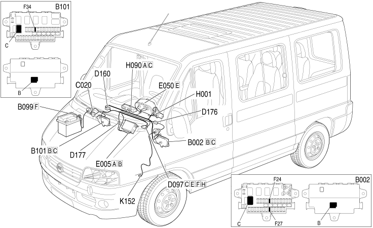

E4025 TACHOGRAPH LOCATION COMPONENTS
- Path
- Electrical equipment > 1 ELECTRICAL FUNCTIONS > E40 INSTRUMENT PANEL > E4025 TACHOGRAPH > E4025 TACHOGRAPH LOCATION COMPONENTS
- Kind
- topic
- Applies to
- all engines; all production periods
- Interactive page
- https://sloeber94.github.io/elrnDB-fDct/en/#/244001856
Applies to: all engines; all production periods
Location Components

Component code | Description | Reference to the assembly |
|---|---|---|
JUNCTION UNIT UNDER DASHBOARD | - | |
MAXI FUSE BOX ON BATTERY | - | |
OPTIONAL JUNCTION UNIT UNDER THE DASHBOARD | - | |
SHORT CIRCUITING COUPLING | - | |
DASHBOARD/OPTIONAL DASHBOARD COUPLING | - | |
OPTIONAL DASHBOARD/TACHOGRAPH COUPLING | - | |
DASHBOARD/TACHOGRAPH COUPLING | - | |
TACHOGRAPH | ||
INSTRUMENT PANEL | ||
SWITCH CONTROL PANEL | ||
TACHOGRAPH SENSOR | - | |
- |
Topics linked from this page (11)
- B002 JUNCTION UNIT UNDER DASHBOARD
- B099 MAXI FUSE BOX ON BATTERY
- B101 OPTIONAL JUNCTION UNIT UNDER THE DASHBOARD
- D097 SHORT CIRCUITING COUPLING
- D160 DASHBOARD/OPTIONAL DASHBOARD COUPLING
- D176 OPTIONAL DASHBOARD/TACHOGRAPH COUPLING
- D177 DASHBOARD/TACHOGRAPH COUPLING
- E005 TACHOGRAPH
- E050 INSTRUMENT PANEL
- H090 SWITCH CONTROL PANEL
- K152 TACHOGRAPH SENSOR